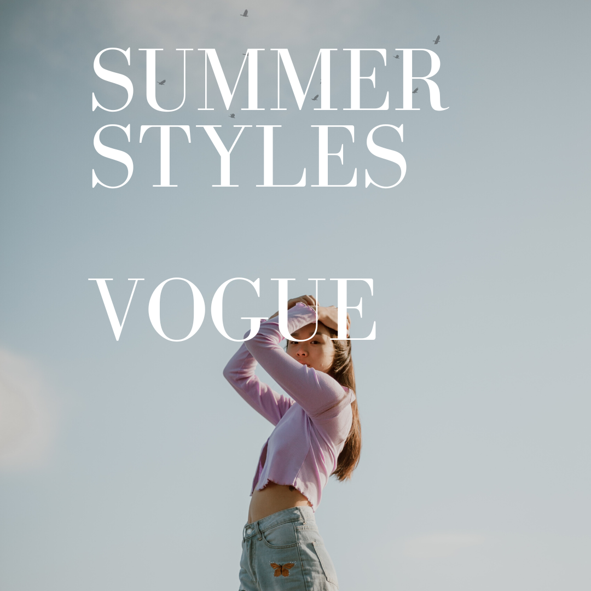

-As Featured in Vogue-
Eishi (CEO)
I started out as a small business, with about 20 customers, but then I met my current business partner, Danny and we decided to go international. Now, our unique collection features materials and stitching techniques from all over the world to create something truly special, something like art. Our clothes tell the story of how we went from being poor, on the streets of Busan, to stylizing the world's most famous models with our outfits. Each and every piece in our collection is hand picked by Danny and I to make sure we only sell the best and most representative clothing items. One day, I hope to reach every part of the world, to have an impact on the way we perceive the world as we know it. (22nd century)

Eishi (PDG)
J'ai commencé comme une petite entreprise, avec une vingtaine de clients, puis j'ai rencontré mon associé actuel, Danny, et nous avons décidé de nous internationaliser. Aujourd'hui, notre collection unique utilise des matériaux et des techniques de couture de partout dans le monde pour créer quelque chose de vraiment spécial, quelque chose qui s'apparente à de l'art. Nos vêtements racontent comment nous sommes passés de la pauvreté, dans les rues de Busan, à la stylisation des mannequins les plus célèbres du monde avec nos tenues. Chaque pièce de notre collection est choisie à la main par Danny et moi-même afin de nous assurer que nous ne vendons que les vêtements les meilleurs et les plus représentatifs. Un jour, j'espère atteindre toutes les parties du monde et avoir un impact sur la façon dont nous percevons le monde tel que nous le connaissons. (22e siècle)
I have personally catered our collection and picked my staff to assist you with your clothing needs. Whether you go online, or buy out clothes in store (see hours here), our services are top notch. However, if you have any feedback whatsoever , we have a form here where you can contact us. Don't believe us? Look at what our previous customers have to say!